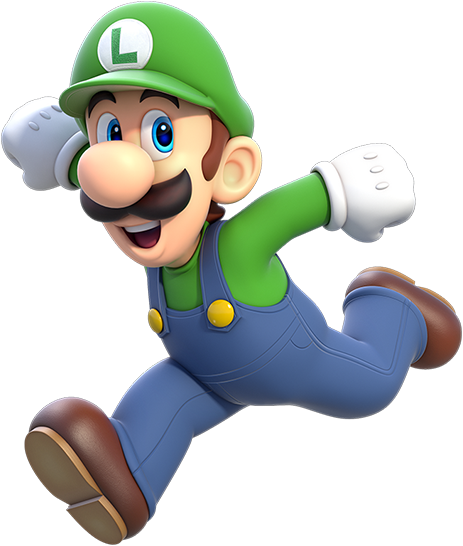
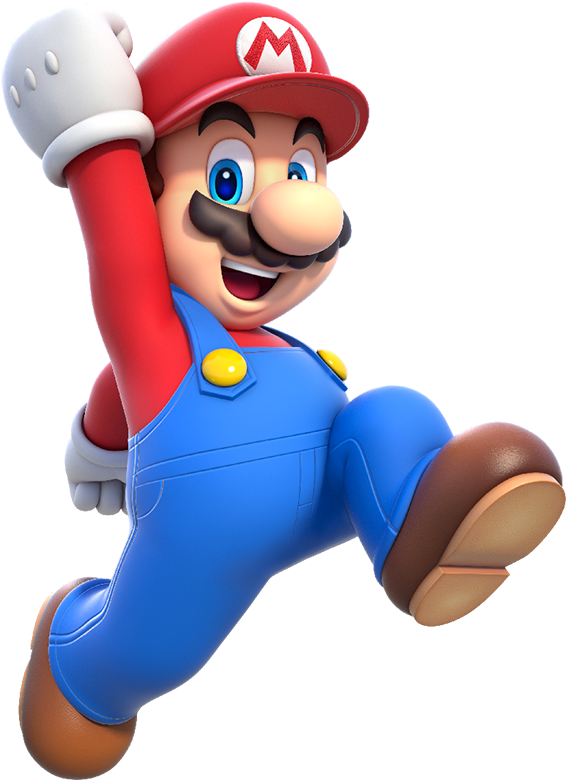
Personagens
Seguem-se alguns dos rostos memoráveis do Reino Cogumelo!
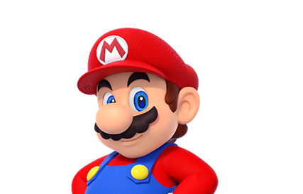
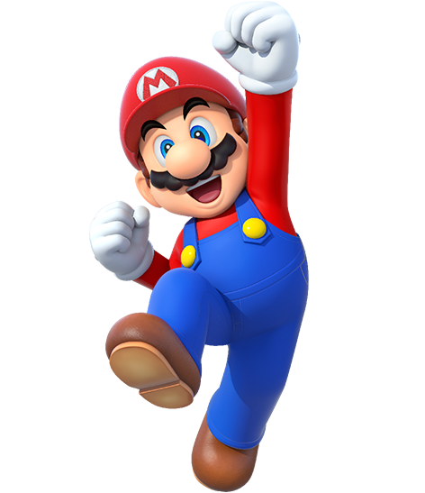
O herói principal do Reino Cogumelo. O Mario está sempre alegre e bem-disposto e é imediatamente reconhecível pelas suas jardineiras azuis, um boné vermelho e o seu bigode característico.
Este amigo fiel da princesa Peach é, juntamente com o seu irmão Luigi, conhecido em todo o reino pelos seus atos de coragem.
O Mario tem um enorme talento para o desporto, incluindo ténis, golfe, basebol, futebol e até corridas de karts! É bom em todos! É canalizador de profissão, mas, na realidade, faz tudo o que for preciso.
Tenta derrotar o seu arqui-inimigo Bowser recorrendo à sua capacidade magistral para saltar e a uma variedade de itens de transformação.
Seleção de jogos protagonizados pelo Mario

Super Mario Bros Wonder


Mario Kart 8 Deluxe
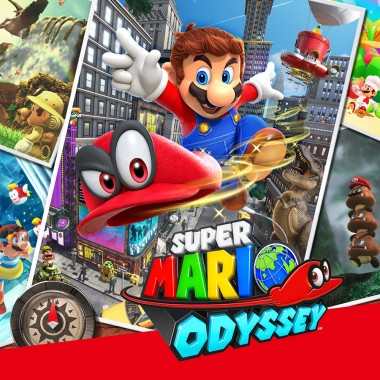
Super Mario Odyssey
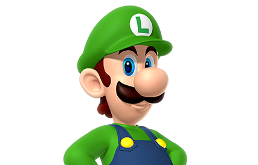
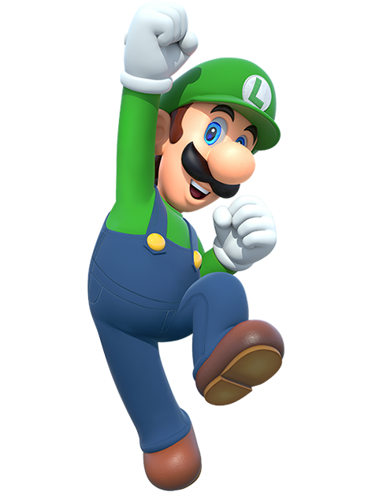
O Luigi, irmão do Mario, é outro dos heróis do Reino Cogumelo. O Luigi é conhecido pelo seu chapéu verde e a sua camisola igualmente verde.
O Luigi tem bom coração, mas demonstra alguma ansiedade, especialmente quando há fantasmas envolvidos. Ainda assim, as suas habilidades não ficam atrás das do Mario, por isso quando estes irmãos unem forças, não há nada que não consigam alcançar!
O Luigi é mais alto e os seus saltos alcançam também mais altura do que os do Mario. Se olhares atentamente, poderás também reparar que a forma do seu bigode é um pouco diferente.
Seleção de jogos com o Luigi
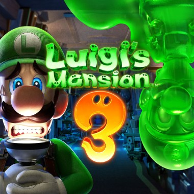
Luigi's Mansion 3
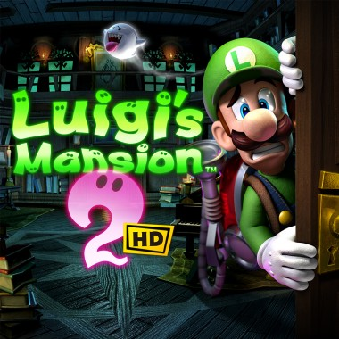
Luigi's Mansion 2 HD
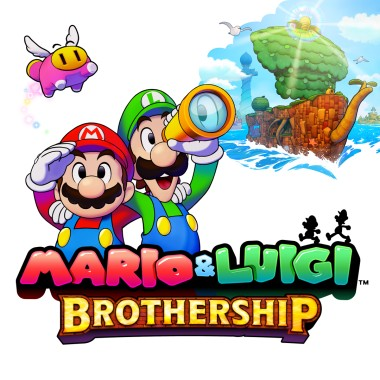
Mario & Luigi: Brothership
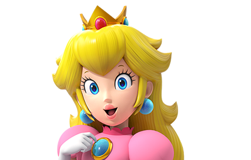
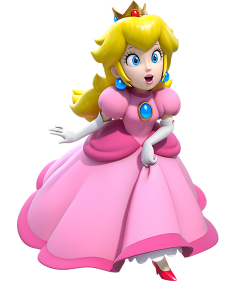
A adorada princesa do Reino Cogumelo. A Peach é extremamente bondosa e está sempre a tentar criar um mundo em que todos podem coexistir em harmonia. É conhecida por usar um vestido cor-de-rosa.
A Peach está sempre a postos para participar em qualquer tipo de desporto e também gosta de fazer bolos e cozinhar.
A Peach e o Mario são bons amigos e ajudam-se mutuamente sempre que podem.
Seleção de jogos com a Peach
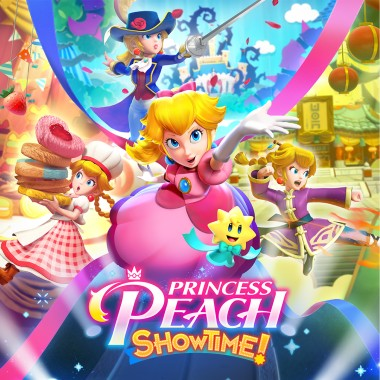
Princess Peach: Showtime!
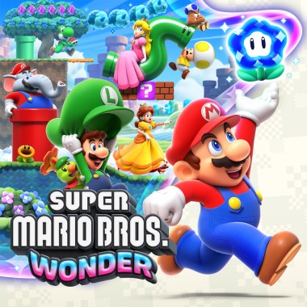
Super Mario Bros. Wonder
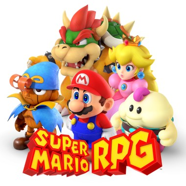
Super Mario RPG
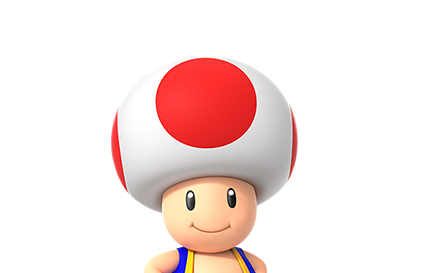
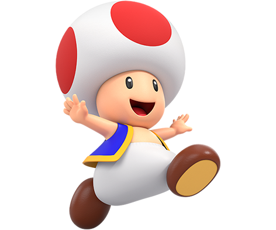
Este residente no Reino Cogumelo trabalha ao serviço da Peach. O Toad apresenta marcas vermelhas na cabeça, mas outros da sua espécie têm uma variedade de cores.
O Toad é muito bem-disposto e leal. Esforça-se por ajudar o Mario e o Luigi nas suas aventuras para proteger o Reino Cogumelo do Bowser, mesmo que acabe por colocar-se em perigo.
Seleção de jogos com o Toad
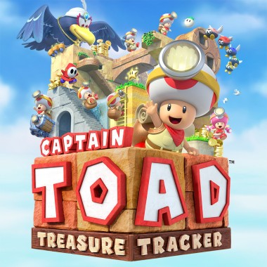
Captain Toad: Treasure Tracker

Super Mario Bros. Wonder

Super Mario RPG
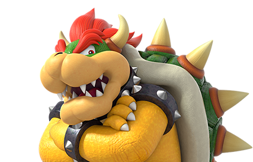
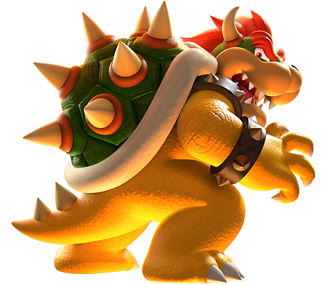
O Rei dos Koopas. O Bowser é um antigo rival do Mario e está sempre a espalhar o caos no Reino Cogumelo.
Comanda uma quantidade de lacaios, incluindo os Koopa Troopas, Goombas, Bills Bala e Masquitos. Sempre que se determina a destruir o Reino Cogumelo, o Mario e os seus amigos costumam travar os seus planos.
O Bowser é um inimigo temível que possui uma força tremenda e até a capacidade de cuspir fogo.
Seleção de jogos com o Bowser

Super Mario 3D World + Bowser's Fury

Super Mario Odyssey

Super Mario RPG
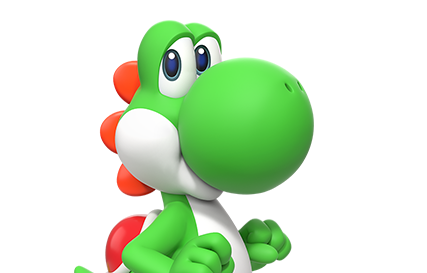
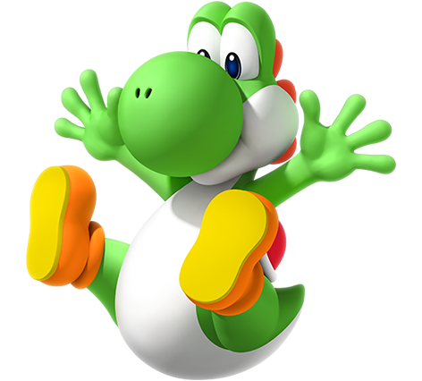
O Yoshi, oriundo da Ilha do Yoshi, é um companheiro em quem o Mario pode sempre confiar. É verde, mas outros membros da sua raça podem apresentar cores como vermelho, azul, cor-de-rosa e amarelo.
O Yoshi tem tanto de bondade quanto de descontração. Utiliza a sua língua para engolir fruta e inimigos, que pode depois transformar em ovos para lançar.
Seleção de jogos com o Yoshi
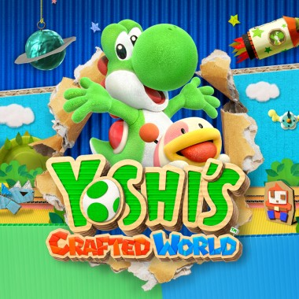
Yoshi's Crafted World

Super Mario Bros. Wonder
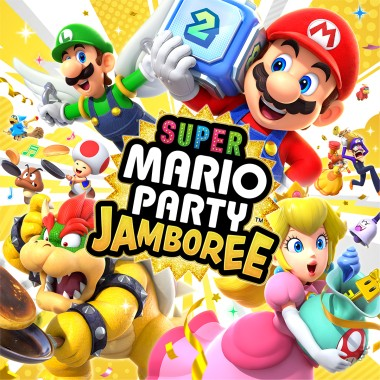
Super Mario Party Jamboree
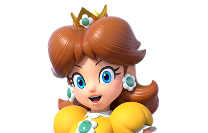
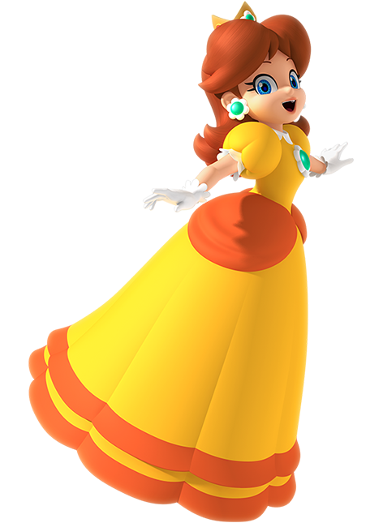
A Daisy é a princesa de Sarasaland. O seu estilo demarca-se por um vestido amarelo e acessórios floridos.
A Daisy é animada, cheia de energia e gosta de praticar uma diversidade de desportos com o Mario e os seus amigos.
Seleção de jogos com a Daisy

Super Mario Bros. Wonder

Mario Golf: Super Rush
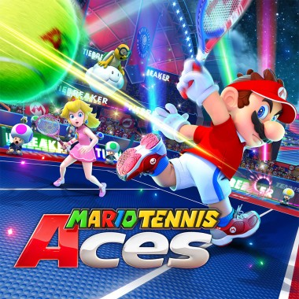
Mario Tennis Aces
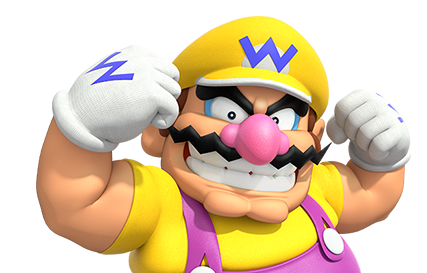
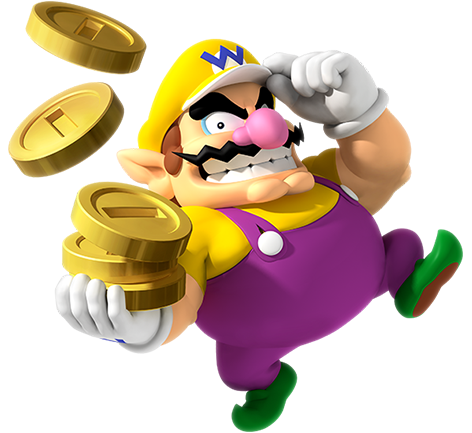
O autoproclamado némesis do Mario. O Wario veste jardineiras roxas, um chapéu amarelo e o seu bigode é igualmente reconhecível.
O Wario e o Mario conhecem-se desde bebés. Apresenta uma personalidade exuberante e não gosta de perder tempo nem energia com trivialidades. Os seus interesses incluem alho e dinheiro.
Seleção de jogos com o Wario
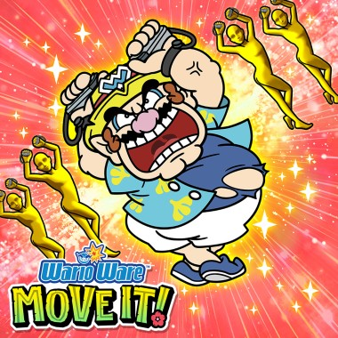
WarioWare: Move It!
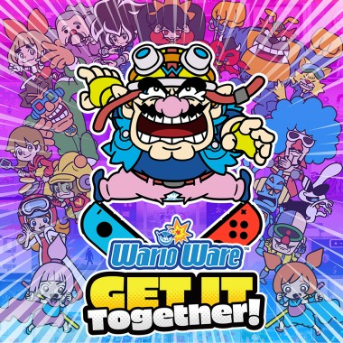
WarioWare: Get It Together!
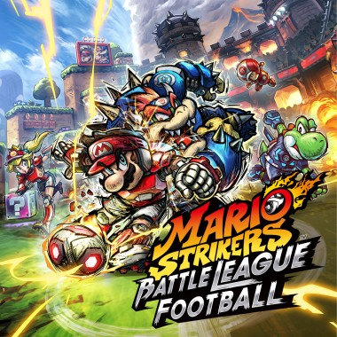
Mario Strikers: Battle League Football
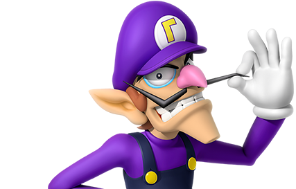
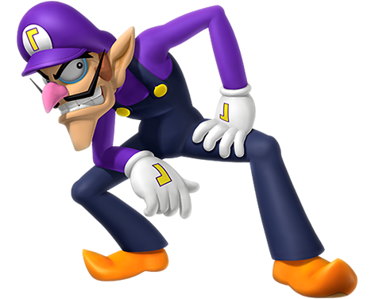
O Waluigi é o compincha e cúmplice do Wario. Autodenomina-se rival do Luigi.
E está disposto a quase tudo para levar a melhor sobre o Mario e o Luigi, mesmo que só por capricho. Os seus braços e pernas longos ajudam-no a manter-se competitivo nos desportos.
Seleção de jogos com o Waluigi
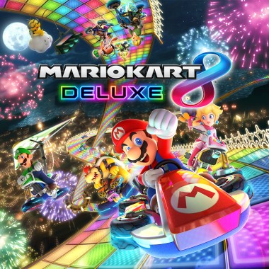
Mario Kart 8 Deluxe

Mario Party Superstars
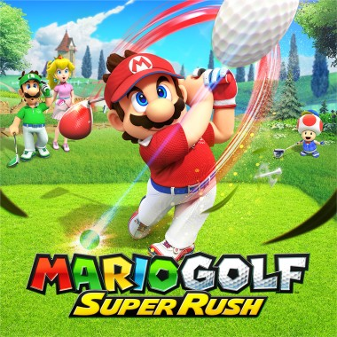
Mario Golf: Super Rush
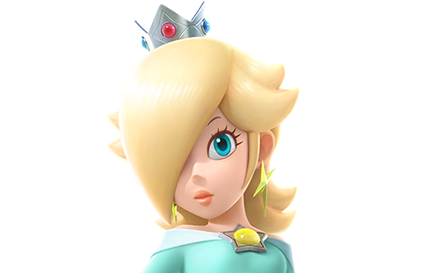
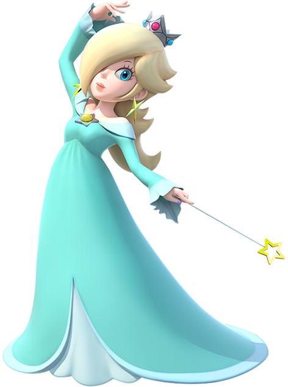
Uma personagem misteriosa que viaja pela galáxia acompanhada pela sua família de criaturas semelhantes a estrelas chamadas Lumas.
A Rosalina pode parecer um pouco distante, mas na verdade tem um coração de ouro. É a mãe adotiva das Lumas. Embora a sua casa seja entre as estrelas, por vezes junta-se ao Mario e aos seus amigos nas suas aventuras.
Seleção de jogos com a Rosalina

Mario Kart 8 Deluxe
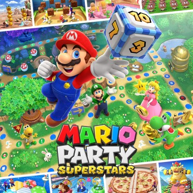
Mario Party Superstars
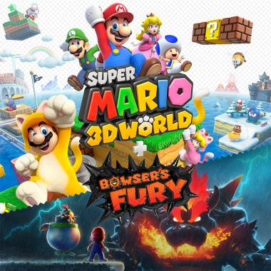
Super Mario 3D World + Bowser's Fury
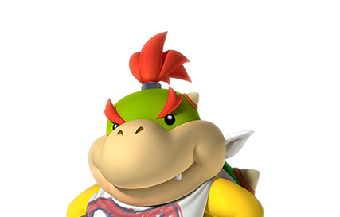
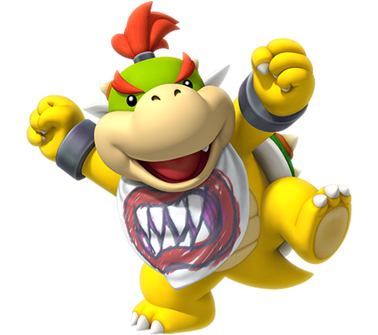
O Bowser Jr. é o único filho do Bowser, o Rei dos Koopas. É muitas vezes visto a usar uma máscara com o desenho de uma boca intimidante.
Apesar de pequeno, herdou toda a força do seu pai.
Tem tendência a fazer birra quando as coisas não correm como ele quer. É conhecido por causar sarilhos e por vezes é um pouco egoísta.
Seleção de jogos com o Bowser Jr.

Super Mario 3D World + Bowser's Fury

Mario Kart 8 Deluxe
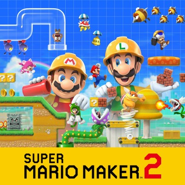
Super Mario Maker 2
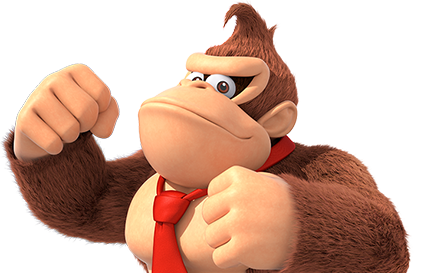
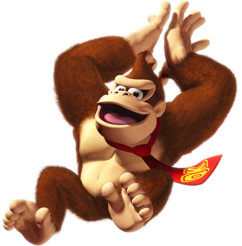
O rei da selva que usa sempre uma gravata vermelha com as suas iniciais.
O Donkey Kong arremessa barris gigantes com grande facilidade e é tão potente que o chão estremece quando o pisa.
Adora bananas e guarda sempre um enorme depósito delas na sua casa na árvore.
Seleção de jogos com o Donkey Kong
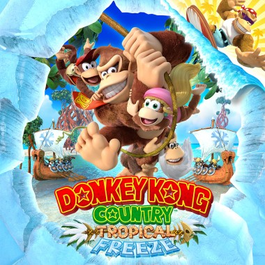
Donkey Kong Country: Tropical Freeze
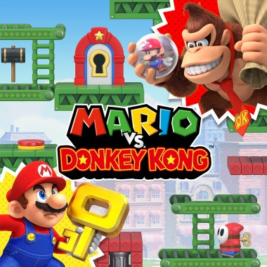
Mario vs. Donkey Kong

Donkey Kong Country Returns HD
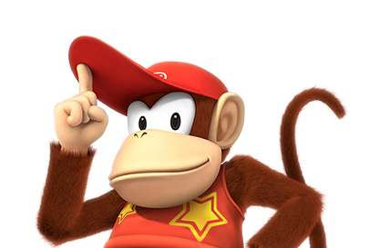
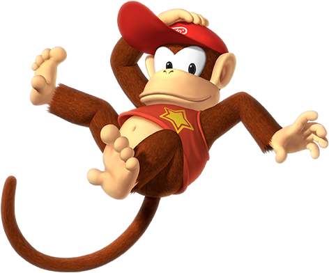
O Diddy Kong é um amigo e companheiro fiel do Donkey Kong. A sua imagem de marca inclui uma camisola vermelha com estrelas amarelas e um boné vermelho.
Embora não seja tão forte quanto o DK, o Diddy Kong é ágil e os seus saltos são impressionantes. Também é rápido e um ótimo aliado para ajudar o DK a proteger as suas bananas.
Seleção de jogos com o Diddy Kong

Donkey Kong Country: Tropical Freeze
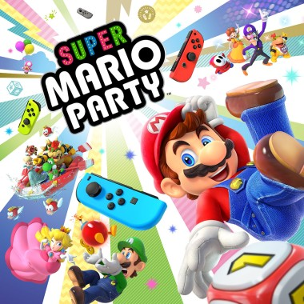
Super Mario Party
Donkey Kong Country Returns HD